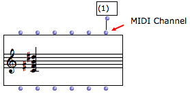
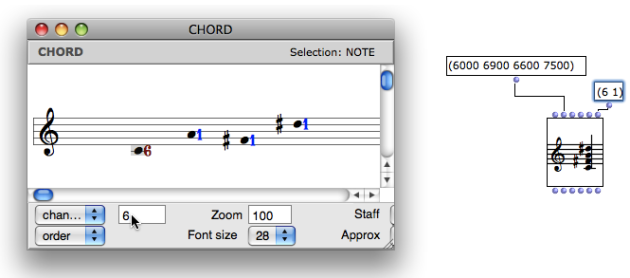

OpenMusic DocumentationHiérarchie de section : OM 6.6 User Manual > MIDI > Rendering and Playback > MIDI Parameters
OpenMusic DocumentationHiérarchie de section : OM 6.6 User Manual > MIDI > Rendering and Playback > MIDI Parameters
Navigation : page précédente | page suivante
Attention, votre navigateur ne supporte pas le javascript ou celui-ci à été désactivé. Certaines fonctionnalités de ce guide sont restreintes.
MIDI Parameters in OM Score Objects
MIDI Channel
Midi notes and events are played on a channel, numbered from 1 to 16.
Each channel can be assigned a timbre – in MIDI, this timbre is called a "program" – as well as a volume, pan, pitchbend and other effects.
In OM objects, the MIDI channel is controlled via "chan" or "lchan" slots. Each note has its own MIDI channel. |

|
To display the channel(s) in a score editor, select the |
Visualizing MIDI channels : Here, every note is on channel 1
|
{kind=link}
The MIDI channel can then be set note by note or for the whole object.
Use the corresponding inlet of the box : enter a list with one or several channels. (Remember that if the list in incomplete, the last item will be repeated and assigned to the remaining notes.)
Use the editor control menu or the score inspector :
choose the
channelmenu item in the menuselect one or several notes
enter a number or scroll the mouse in the adjacent text box.

MIDI "Tracks"
In addition to the channels, MIDI also has a notion of tracks (as used by most common multitrack sequencers). In OM, we consider each voice in a POLY or MULTI-SEQ object as a different track when playing these objects in MIDI. This is not the same thing as if they were on different channels : a track can include events (notes) corresponding to several diferent channels, and conversely, several tracks can play notes or events on the same channel.
MIDI Ports
MIDI communication messages can be sent to different MIDI ports.
Depending on the MIDI port setting, a port can be connected to one or several specific synthesizer(s) who will receive exclusively messages sent on this port.
The MIDI port parameter is not represented in the inputs of the box, but can be set and changed in the score editors. To change the port number of one or several notes :
|
The MIDI port can be modified in score editors, like the channel parameter.
|
{kind=link}
MIDI Ports Setup and Assignation
Références :
Plan :
Navigation : page précédente | page suivante
A propos...(c) Ircam - Centre Pompidou